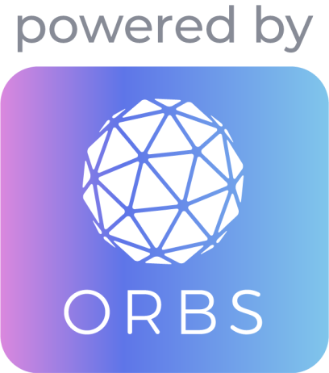
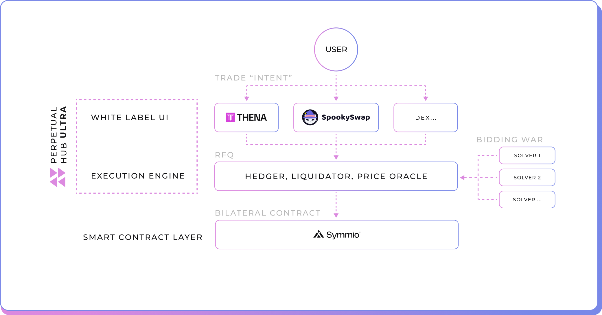
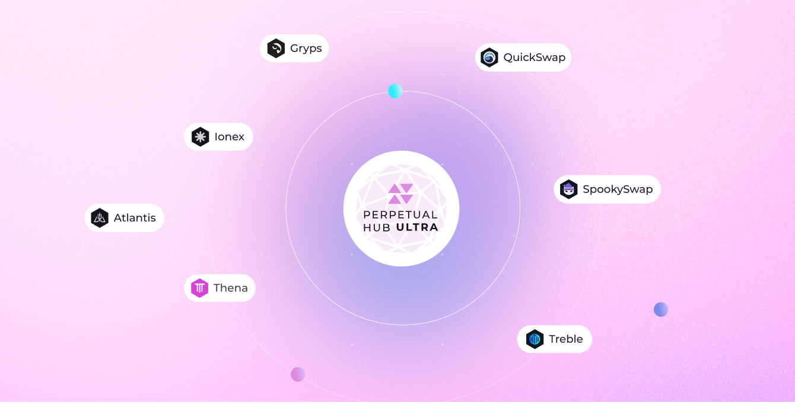

선물 유동성 허브 울트라
어떤 플랫폼이나 개발자도
바로 도입할 수 있는
온체인 무기한 선물 플랫폼
선물 유동성 허브 울트라(Perpetual Hub Ultra)는 완전히 통합된 온체인 선물 거래 프로토콜로, 어떤 빌더, 프론트엔드, 프로토콜이든 도입하고 배포할 수 있습니다. 커스터마이즈 가능한 사용자 인터페이스와 모듈형 구성 요소를 모두 갖추고 있으며, Orbs의 고도화된 Layer 3 인프라를 기반으로 적은 리소스로도 고성능 무기한 선물 거래에 자연스럽게 접근할 수 있게 해줍니다.
선물 유동성 허브 울트라는 의도(Intent) 기반 무기한 선물 거래의 기반이 되는 Symm.io의 스마트 컨트랙트 인프라 위에 구축되었습니다. 모듈형 설계를 바탕으로 실행 로직, UI, 유동성 시스템을 결합한 맞춤형 구현이 가능하며, 이를 통해 완전하고 즉시 배포 가능한 솔루션을 제공합니다.


선물 유동성 허브 울트라는 빠르고 매끄러운 배포를 위해 설계되었습니다. 포괄적인 모듈 스택에는 다음이 포함됩니다:
커스터마이즈 가능한 트레이딩 UI
어떤 브랜드에도 쉽게 맞출 수 있는 화이트라벨 인터페이스.
자동화된 L3 헤저 및 청산자
효율적인 리스크 관리 시스템.
신뢰할 수 있는 오라클
정확한 시장 데이터를 보장하는 안전한 실시간 가격 피드.
쉬운 통합 적용
선물 유동성 허브 울트라를 사용하면 어떤 플랫폼이든 여러 서드파티 제공업체에 의존하지 않고도 Orbs Layer 3 기반의 완전한 무기한 거래 스택을 통합할 수 있습니다.
통합이 완료되면 참여자는 헤저 또는 청산자로 활동할 수 있으며, 내장 오라클과 완전 관리형 트레이딩 UI까지 하나의 모듈형 솔루션 안에서 사용할 수 있습니다.

파트너 및 통합
선물 유동성 허브 울트라는 이미 가장 혁신적인 일부 DeFi 트레이딩 플랫폼에서 의도 기반 무기한 선물 거래를 지원하고 있습니다.
여러 체인에 배포되어 빠르게 확장 중인 울트라는 실행, 헤징, 청산, 오라클, UI를 포함한 풀스택 무기한 선물 인프라를 제공하며, 통합에 필요한 부담을 최소화합니다.

Orbs Network 기반
Orbs Network는 독자적인 Layer 3 기술을 통해 스마트 컨트랙트 플랫폼의 역량을 확장하고, DeFi 전반에서 DEX에게 핵심 서비스를 제공합니다. Orbs L3 기술을 활용하는 도구로는 유동성을 집계하고 가격 영향을 낮춰주는 유동성 허브, 그리고 효율적인 실행을 위한 탈중앙화 limit 주문 및 TWAP 주문 같은 고급 트레이딩 주문방식이 있습니다. 선물 유동성 허브의 출시는 현물 및 선물 시장의 DEX를 위한 핵심 DeFi 인프라로서 Orbs 기술의 입지를 더욱 강화합니다.
Orbs Network는 수십 개의 독립 검증인이 Proof-of-Stake 합의를 통해 운영되고 있으며, 1억 달러 이상이 스테이킹되어 있습니다. 2019년부터 메인넷에서 운영되고 있습니다.
통합할 준비가 되셨나요? 선물 유동성 허브 울트라를 여러분의 프로토콜, 프론트엔드 또는 체인에 도입해보세요. 시작하려면 팀에 문의하거나 아래 통합 문서를 확인하세요.
선물 유동성 허브 울트라 소프트웨어는 Guardians와 proof-of-stake 생태계를 갖춘 탈중앙화 Orbs Network의 힘을 활용하여, 플랫폼, 시장 참여자 및 기타 제3자가 이 탈중앙화 서비스 모음을 제공하고 운영할 수 있도록 합니다. Orbs는 직접 거래, 헤징 또는 청산자 역할을 수행하지 않습니다. 선물 유동성 허브는 아직 활발히 개발 중인 베타 버전이며, 관련된 모든 디지털 자산, 블록체인 네트워크 및 DEX 플랫폼 역시 지속적인 개발 중에 있으며 다양한 위험에 노출되어 있습니다. 따라서 선물 유동성 허브 또는 그 기반 플랫폼은 다음과 같을 수 있습니다:
(a) 버그, 오류 또는 결함을 포함할 수 있으며, (b) 정상적으로 작동하지 않거나 중단 및 이용 불가 시간이 발생할 수 있고, (c) 자금의 전부 또는 일부 손실로 이어질 수 있습니다. 여기에 설명된 플랫폼, 애플리케이션 및/또는 서비스를 사용하는 모든 책임은 사용자 본인에게 있으며, 모든 거래 결정에 대한 책임 또한 전적으로 사용자에게 있습니다.
웹사이트 방문 경험 향상을 위해 이 홈페이지는 브라우저에서 쿠키를 사용합니다. 웹사이트를 계속 보시려면 쿠키 운영 정책에 동의해주세요.